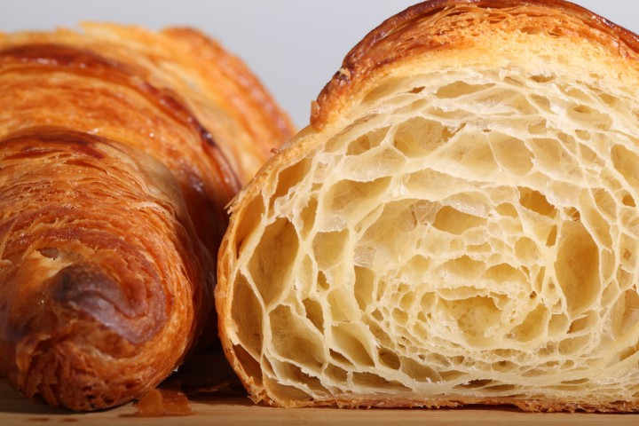
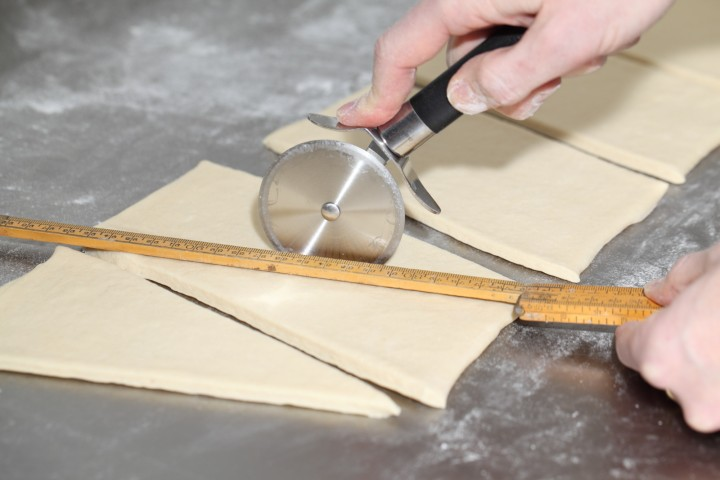
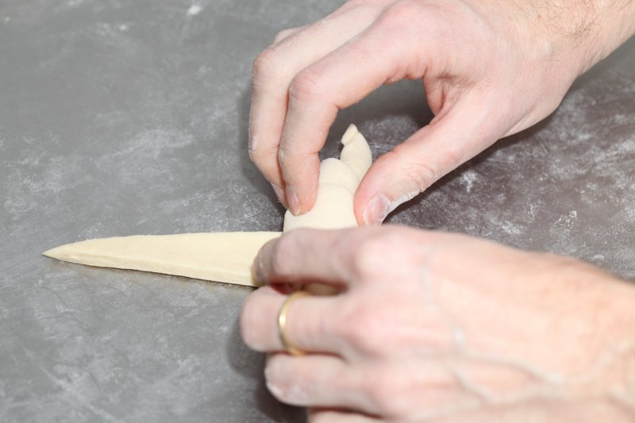
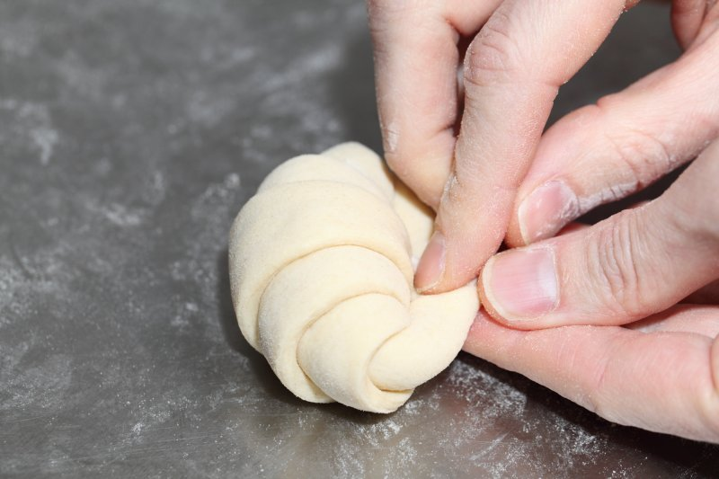

a
Recipe for French Croissant 🥐
Croissant Recipe

Ingredients for the croissant dough
- 500g French Type 55 flour or unbleached all-purpose flour / plain flour (extra for dusting)
- 140 g water
- 140 g whole milk (you can take it straight from the fridge)
- 55 g sugar
- 40 g soft unsalted butter
- 11 g instant yeast
- 12 g salt
Other ingredients
- 280 g cold unsalted butter for laminating
- 1 egg + 1 tsp water for the egg wash



Instructions for recipe👆
Contact me 📧
Yummy pictures 📸